Here I display three sets of photos, two of which are buildings and one of which is a wall.
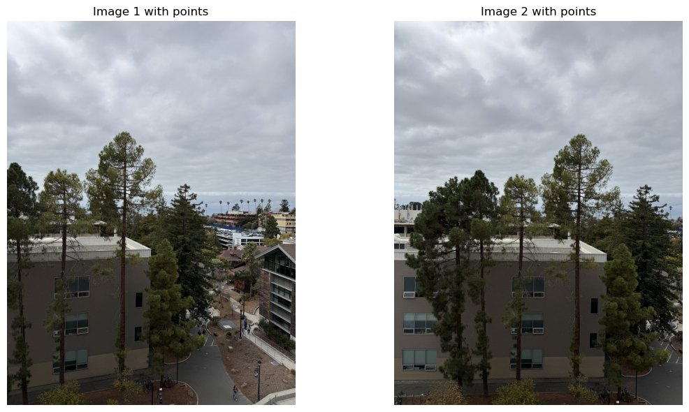
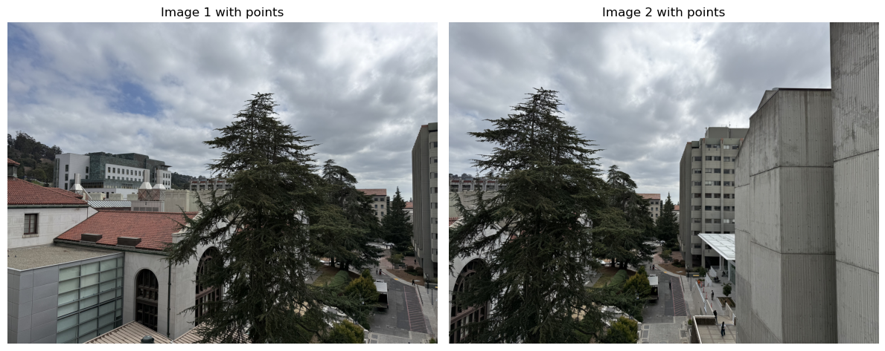
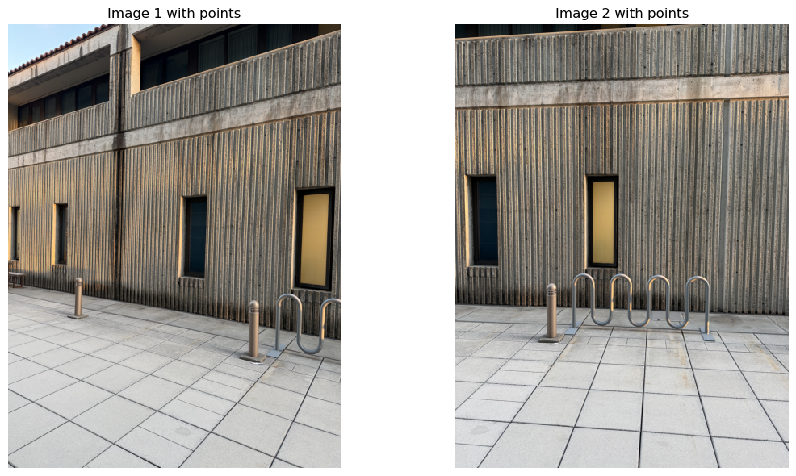
Matrix \(A\) (shape 40×8):
$$ \begin{bmatrix}-2138.000 & -3400.000 & -1.000 & 0.000 & 0.000 & 0.000 & 6751804.000 & 10737200.000 \\0.000 & 0.000 & 0.000 & -2138.000 & -3400.000 & -1.000 & 7423136.000 & 11804800.000 \\-1914.000 & -4040.000 & -1.000 & 0.000 & 0.000 & 0.000 & 5592708.000 & 11804880.000 \\0.000 & 0.000 & 0.000 & -1914.000 & -4040.000 & -1.000 & 7893336.000 & 16660960.000 \\-2022.000 & -4028.000 & -1.000 & 0.000 & 0.000 & 0.000 & 6134748.000 & 12220952.000 \\0.000 & 0.000 & 0.000 & -2022.000 & -4028.000 & -1.000 & 8330640.000 & 16595360.000 \\-1914.000 & -4268.000 & -1.000 & 0.000 & 0.000 & 0.000 & 5585052.000 & 12454024.000 \\0.000 & 0.000 & 0.000 & -1914.000 & -4268.000 & -1.000 & 8329728.000 & 18574336.000 \\-2014.000 & -4256.000 & -1.000 & 0.000 & 0.000 & 0.000 & 6086308.000 & 12861632.000 \\0.000 & 0.000 & 0.000 & -2014.000 & -4256.000 & -1.000 & 8764928.000 & 18522112.000 \\-1902.000 & -4548.000 & -1.000 & 0.000 & 0.000 & 0.000 & 5534820.000 & 13234680.000 \\0.000 & 0.000 & 0.000 & -1902.000 & -4548.000 & -1.000 & 8825280.000 & 21102720.000 \\-2006.000 & -4540.000 & -1.000 & 0.000 & 0.000 & 0.000 & 6054108.000 & 13701720.000 \\0.000 & 0.000 & 0.000 & -2006.000 & -4540.000 & -1.000 & 9315864.000 & 21083760.000 \\-1898.000 & -4768.000 & -1.000 & 0.000 & 0.000 & 0.000 & 5515588.000 & 13855808.000 \\0.000 & 0.000 & 0.000 & -1898.000 & -4768.000 & -1.000 & 9231872.000 & 23191552.000 \\-706.000 & -3816.000 & -1.000 & 0.000 & 0.000 & 0.000 & 1238324.000 & 6693264.000 \\0.000 & 0.000 & 0.000 & -706.000 & -3816.000 & -1.000 & 2682800.000 & 14500800.000 \\-1230.000 & -3784.000 & -1.000 & 0.000 & 0.000 & 0.000 & 2747820.000 & 8453456.000 \\0.000 & 0.000 & 0.000 & -1230.000 & -3784.000 & -1.000 & 4674000.000 & 14379200.000 \\-706.000 & -4136.000 & -1.000 & 0.000 & 0.000 & 0.000 & 1238324.000 & 7254544.000 \\0.000 & 0.000 & 0.000 & -706.000 & -4136.000 & -1.000 & 2900248.000 & 16990688.000 \\-1222.000 & -4104.000 & -1.000 & 0.000 & 0.000 & 0.000 & 2725060.000 & 9151920.000 \\0.000 & 0.000 & 0.000 & -1222.000 & -4104.000 & -1.000 & 5034640.000 & 16908480.000 \\-1218.000 & -4328.000 & -1.000 & 0.000 & 0.000 & 0.000 & 2711268.000 & 9634128.000 \\0.000 & 0.000 & 0.000 & -1218.000 & -4328.000 & -1.000 & 5290992.000 & 18800832.000 \\-698.000 & -4692.000 & -1.000 & 0.000 & 0.000 & 0.000 & 1213124.000 & 8154696.000 \\0.000 & 0.000 & 0.000 & -698.000 & -4692.000 & -1.000 & 3241512.000 & 21789648.000 \\-1210.000 & -4632.000 & -1.000 & 0.000 & 0.000 & 0.000 & 2678940.000 & 10255248.000 \\0.000 & 0.000 & 0.000 & -1210.000 & -4632.000 & -1.000 & 5624080.000 & 21529536.000 \\-686.000 & -4928.000 & -1.000 & 0.000 & 0.000 & 0.000 & 1186780.000 & 8525440.000 \\0.000 & 0.000 & 0.000 & -686.000 & -4928.000 & -1.000 & 3342192.000 & 24009216.000 \\-1206.000 & -4860.000 & -1.000 & 0.000 & 0.000 & 0.000 & 2670084.000 & 10760040.000 \\0.000 & 0.000 & 0.000 & -1206.000 & -4860.000 & -1.000 & 5870808.000 & 23658480.000 \\-690.000 & -5252.000 & -1.000 & 0.000 & 0.000 & 0.000 & 1193700.000 & 9085960.000 \\0.000 & 0.000 & 0.000 & -690.000 & -5252.000 & -1.000 & 3576960.000 & 27226368.000 \\-1194.000 & -5172.000 & -1.000 & 0.000 & 0.000 & 0.000 & 2624412.000 & 11368056.000 \\0.000 & 0.000 & 0.000 & -1194.000 & -5172.000 & -1.000 & 6175368.000 & 26749584.000 \\-758.000 & -3280.000 & -1.000 & 0.000 & 0.000 & 0.000 & 1365916.000 & 5910560.000 \\0.000 & 0.000 & 0.000 & -758.000 & -3280.000 & -1.000 & 2492304.000 & 10784640.000\end{bmatrix} $$
Vector \(\mathbf{b}\) (shape 40×1):
$$ \begin{bmatrix}-3158.000 \\-3472.000 \\-2922.000 \\-4124.000 \\-3034.000 \\-4120.000 \\-2918.000 \\-4352.000 \\-3022.000 \\-4352.000 \\-2910.000 \\-4640.000 \\-3018.000 \\-4644.000 \\-2906.000 \\-4864.000 \\-1754.000 \\-3800.000 \\-2234.000 \\-3800.000 \\-1754.000 \\-4108.000 \\-2230.000 \\-4120.000 \\-2226.000 \\-4344.000 \\-1738.000 \\-4644.000 \\-2214.000 \\-4648.000 \\-1730.000 \\-4872.000 \\-2214.000 \\-4868.000 \\-1730.000 \\-5184.000 \\-2198.000 \\-5172.000 \\-1802.000 \\-3288.000\end{bmatrix} $$
We report \(H\) normalized so that \(H_{33}=1\):
$$ \begin{bmatrix}0.775 & -0.008 & 1157.522 \\-0.132 & 0.911 & 249.095 \\-0.000 & -0.000 & 1.000\end{bmatrix} $$
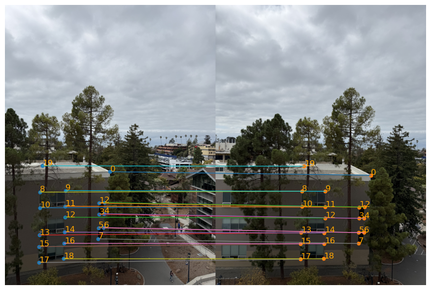
Matrix \(A\) (shape 20×8):
$$ \begin{bmatrix}-5510.000 & -1380.000 & -1.000 & 0.000 & 0.000 & 0.000 & 17422620.000 & 4363560.000 \\0.000 & 0.000 & 0.000 & -5510.000 & -1380.000 & -1.000 & 8838040.000 & 2213520.000 \\-5030.000 & -2228.000 & -1.000 & 0.000 & 0.000 & 0.000 & 14134300.000 & 6260680.000 \\0.000 & 0.000 & 0.000 & -5030.000 & -2228.000 & -1.000 & 11528760.000 & 5106576.000 \\-5034.000 & -2304.000 & -1.000 & 0.000 & 0.000 & 0.000 & 14145540.000 & 6474240.000 \\0.000 & 0.000 & 0.000 & -5034.000 & -2304.000 & -1.000 & 11900376.000 & 5446656.000 \\-4906.000 & -3420.000 & -1.000 & 0.000 & 0.000 & 0.000 & 13118644.000 & 9145080.000 \\0.000 & 0.000 & 0.000 & -4906.000 & -3420.000 & -1.000 & 16464536.000 & 11477520.000 \\-4994.000 & -3436.000 & -1.000 & 0.000 & 0.000 & 0.000 & 13693548.000 & 9421512.000 \\0.000 & 0.000 & 0.000 & -4994.000 & -3436.000 & -1.000 & 16779840.000 & 11544960.000 \\-5038.000 & -3472.000 & -1.000 & 0.000 & 0.000 & 0.000 & 13975412.000 & 9631328.000 \\0.000 & 0.000 & 0.000 & -5038.000 & -3472.000 & -1.000 & 17048592.000 & 11749248.000 \\-5334.000 & -4116.000 & -1.000 & 0.000 & 0.000 & 0.000 & 15905988.000 & 12273912.000 \\0.000 & 0.000 & 0.000 & -5334.000 & -4116.000 & -1.000 & 20887944.000 & 16118256.000 \\-5342.000 & -4208.000 & -1.000 & 0.000 & 0.000 & 0.000 & 15972580.000 & 12581920.000 \\0.000 & 0.000 & 0.000 & -5342.000 & -4208.000 & -1.000 & 21368000.000 & 16832000.000 \\-2662.000 & -3148.000 & -1.000 & 0.000 & 0.000 & 0.000 & 750684.000 & 887736.000 \\0.000 & 0.000 & 0.000 & -2662.000 & -3148.000 & -1.000 & 8901728.000 & 10526912.000 \\-2650.000 & -3552.000 & -1.000 & 0.000 & 0.000 & 0.000 & 662500.000 & 888000.000 \\0.000 & 0.000 & 0.000 & -2650.000 & -3552.000 & -1.000 & 10133600.000 & 13582848.000\end{bmatrix} $$
Vector \(\mathbf{b}\) (shape 20×1):
$$ \begin{bmatrix}-3162.000 \\-1604.000 \\-2810.000 \\-2292.000 \\-2810.000 \\-2364.000 \\-2674.000 \\-3356.000 \\-2742.000 \\-3360.000 \\-2774.000 \\-3384.000 \\-2982.000 \\-3916.000 \\-2990.000 \\-4000.000 \\-282.000 \\-3344.000 \\-250.000 \\-3824.000\end{bmatrix} $$
We report \(H\) normalized so that \(H_{33}=1\):
$$ \begin{bmatrix}2.274 & -0.116 & -5236.892 \\0.566 & 1.791 & -1975.948 \\0.000 & -0.000 & 1.000\end{bmatrix} $$
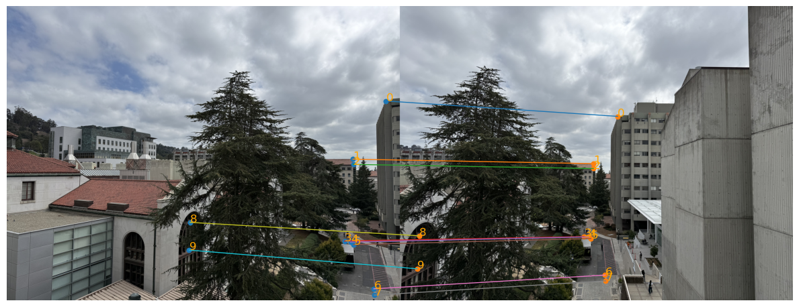
Matrix \(A\) (shape 30×8):
$$ \begin{bmatrix}-4206.000 & -2080.000 & -1.000 & 0.000 & 0.000 & 0.000 & 8841012.000 & 4372160.000 \\0.000 & 0.000 & 0.000 & -4206.000 & -2080.000 & -1.000 & 8125992.000 & 4018560.000 \\-3686.000 & -2104.000 & -1.000 & 0.000 & 0.000 & 0.000 & 6155620.000 & 3513680.000 \\0.000 & 0.000 & 0.000 & -3686.000 & -2104.000 & -1.000 & 7106608.000 & 4056512.000 \\-4154.000 & -3460.000 & -1.000 & 0.000 & 0.000 & 0.000 & 8698476.000 & 7245240.000 \\0.000 & 0.000 & 0.000 & -4154.000 & -3460.000 & -1.000 & 13110024.000 & 10919760.000 \\-3650.000 & -3404.000 & -1.000 & 0.000 & 0.000 & 0.000 & 6139300.000 & 5725528.000 \\0.000 & 0.000 & 0.000 & -3650.000 & -3404.000 & -1.000 & 11475600.000 & 10702176.000 \\-2554.000 & -2188.000 & -1.000 & 0.000 & 0.000 & 0.000 & 1353620.000 & 1159640.000 \\0.000 & 0.000 & 0.000 & -2554.000 & -2188.000 & -1.000 & 4934328.000 & 4227216.000 \\-2522.000 & -3288.000 & -1.000 & 0.000 & 0.000 & 0.000 & 1387100.000 & 1808400.000 \\0.000 & 0.000 & 0.000 & -2522.000 & -3288.000 & -1.000 & 7888816.000 & 10284864.000 \\-3442.000 & -4316.000 & -1.000 & 0.000 & 0.000 & 0.000 & 5238724.000 & 6568952.000 \\0.000 & 0.000 & 0.000 & -3442.000 & -4316.000 & -1.000 & 13823072.000 & 17333056.000 \\-3366.000 & -4400.000 & -1.000 & 0.000 & 0.000 & 0.000 & 4880700.000 & 6380000.000 \\0.000 & 0.000 & 0.000 & -3366.000 & -4400.000 & -1.000 & 13840992.000 & 18092800.000 \\-3706.000 & -4368.000 & -1.000 & 0.000 & 0.000 & 0.000 & 6470676.000 & 7626528.000 \\0.000 & 0.000 & 0.000 & -3706.000 & -4368.000 & -1.000 & 14898120.000 & 17559360.000 \\-3634.000 & -4464.000 & -1.000 & 0.000 & 0.000 & 0.000 & 6141460.000 & 7544160.000 \\0.000 & 0.000 & 0.000 & -3634.000 & -4464.000 & -1.000 & 14972080.000 & 18391680.000 \\-3990.000 & -4436.000 & -1.000 & 0.000 & 0.000 & 0.000 & 7908180.000 & 8792152.000 \\0.000 & 0.000 & 0.000 & -3990.000 & -4436.000 & -1.000 & 16087680.000 & 17885952.000 \\-3942.000 & -4540.000 & -1.000 & 0.000 & 0.000 & 0.000 & 7655364.000 & 8816680.000 \\0.000 & 0.000 & 0.000 & -3942.000 & -4540.000 & -1.000 & 16288344.000 & 18759280.000 \\-3194.000 & -4600.000 & -1.000 & 0.000 & 0.000 & 0.000 & 4094708.000 & 5897200.000 \\0.000 & 0.000 & 0.000 & -3194.000 & -4600.000 & -1.000 & 13849184.000 & 19945600.000 \\-3434.000 & -5576.000 & -1.000 & 0.000 & 0.000 & 0.000 & 5254020.000 & 8531280.000 \\0.000 & 0.000 & 0.000 & -3434.000 & -5576.000 & -1.000 & 17801856.000 & 28905984.000 \\-2418.000 & -4160.000 & -1.000 & 0.000 & 0.000 & 0.000 & 1126788.000 & 1938560.000 \\0.000 & 0.000 & 0.000 & -2418.000 & -4160.000 & -1.000 & 9826752.000 & 16906240.000\end{bmatrix} $$
Vector \(\mathbf{b}\) (shape 30×1):
$$ \begin{bmatrix}-2102.000 \\-1932.000 \\-1670.000 \\-1928.000 \\-2094.000 \\-3156.000 \\-1682.000 \\-3144.000 \\-530.000 \\-1932.000 \\-550.000 \\-3128.000 \\-1522.000 \\-4016.000 \\-1450.000 \\-4112.000 \\-1746.000 \\-4020.000 \\-1690.000 \\-4120.000 \\-1982.000 \\-4032.000 \\-1942.000 \\-4132.000 \\-1282.000 \\-4336.000 \\-1530.000 \\-5184.000 \\-466.000 \\-4064.000\end{bmatrix} $$
We report \(H\) normalized so that \(H_{33}=1\):
$$ \begin{bmatrix}1.916 & 0.074 & -4217.728 \\0.502 & 1.735 & -2050.372 \\0.000 & 0.000 & 1.000\end{bmatrix} $$
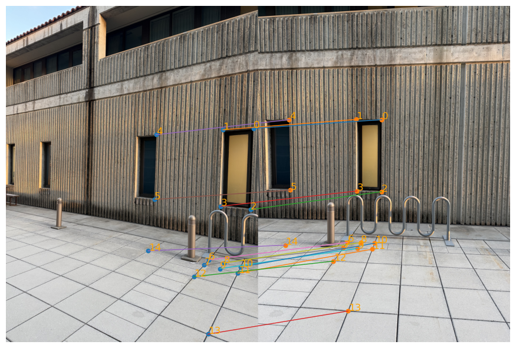
We rectify images via inverse warping using the same homography. The geometric mapping is identical; differences are purely in the resampling method.
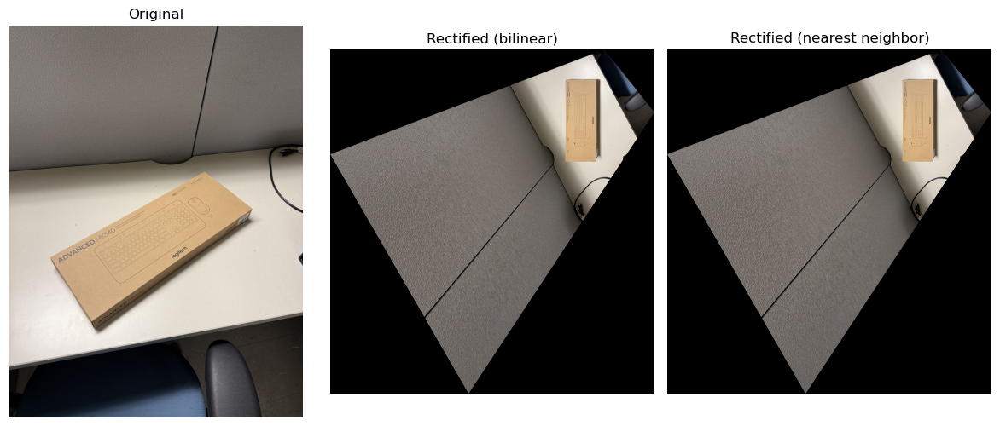
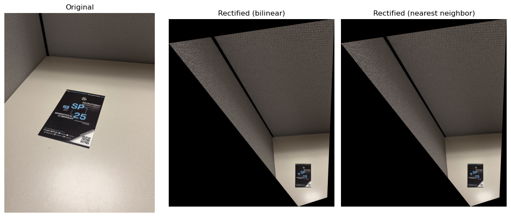
We form a mosaic by warping one image into the coordinate system of the other and combining them with soft alpha feathering (weighted averaging). The geometry comes from the homography; the visual smoothness comes from our weights.
im1 (to be warped), im2 (reference),
H_1to2 (homography mapping im1 → im2),
a warper warp_func (either warpImageNearestNeighbor or warpImageBilinear),
and blending parameters feather, falloff, gamma, bg.
blend_pair does)warp_func(im1, H_1to2, fill_value=bg) which returns:
the warped image w1, a binary alpha a1 (0 outside, 255 where samples are valid),
and the integer offset of the warped patch within the mosaic canvas.W and height H.(H, W, 3):
canvas_sum: accumulates pixel * weightcanvas_wsum: accumulates weightim2; the returned a1 for w1).ksize = falloff.
We implement the blur with an integral-image style 1-D pass that preserves the original array size.gamma to sharpen or widen the ramp._soft_alpha(alpha_uint8, ksize, gamma).
im2 (unwarped) at its natural location and w1 at its offset:
canvas_sum += patch * weight canvas_wsum += weightWe use
_accumulate(...) to handle offsets, channels, and broadcasting.mosaic = canvas_sum / max(canvas_wsum, ε) with a small ε to avoid division by zero.
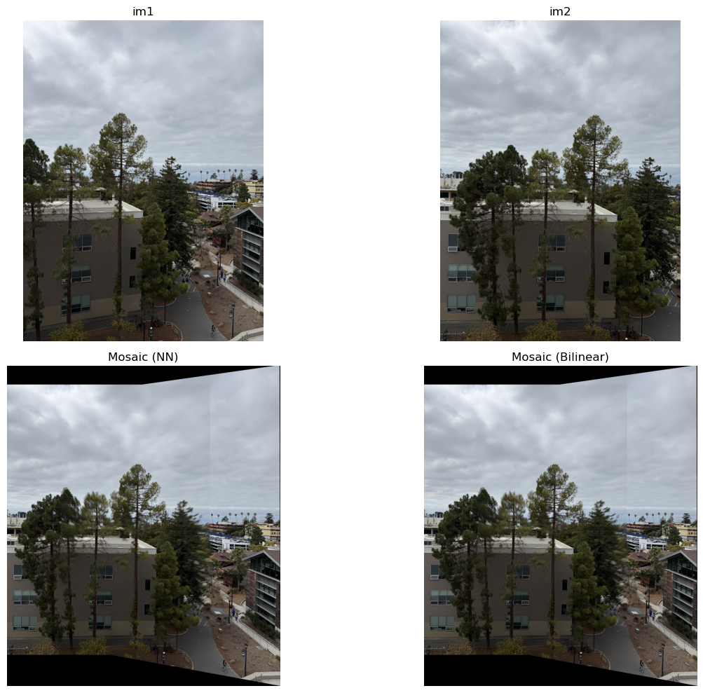
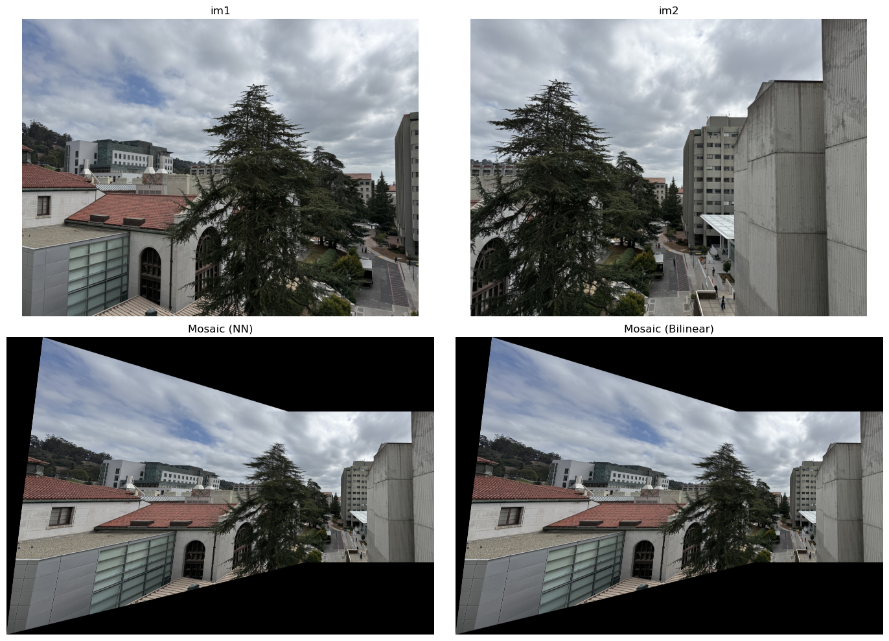
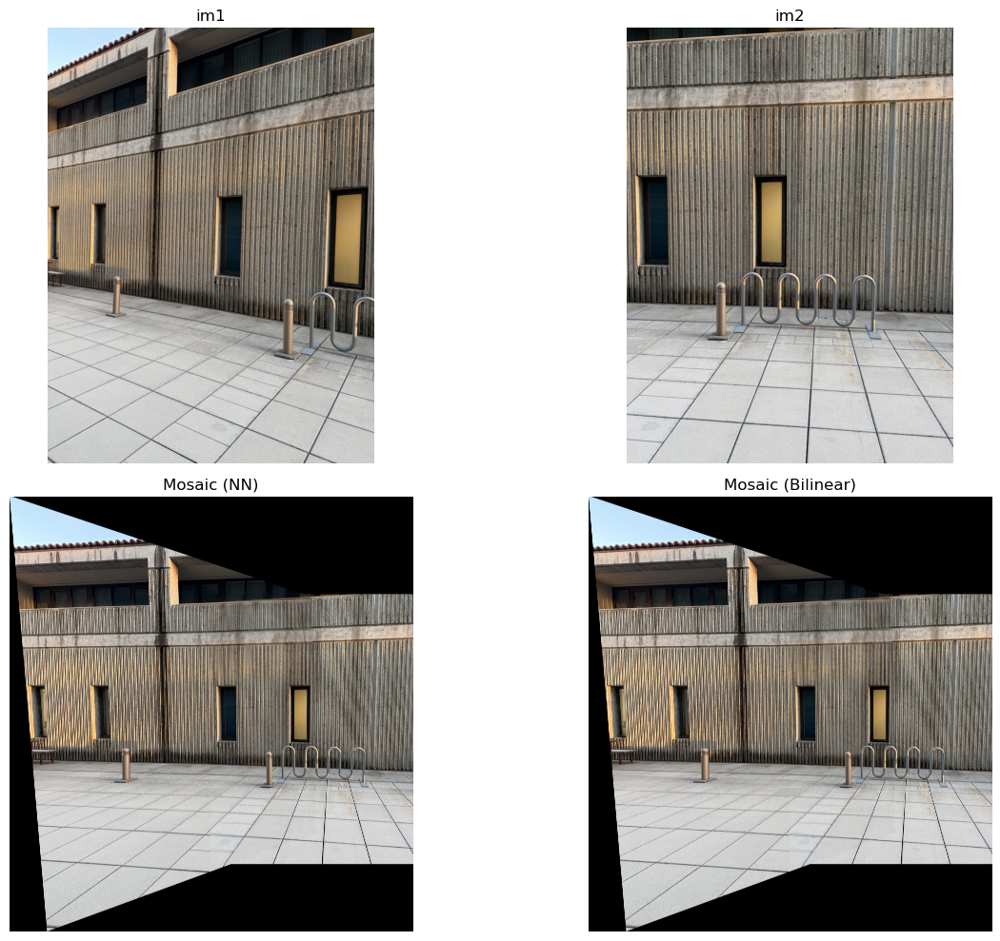
Instead of projecting each image onto a plane, we project it onto the surface of a cylinder and then “unroll” the cylinder to a flat image. With focal length \(f\) (in pixels) and principal point \((c_x,c_y)\), the horizontal coordinate is reparameterized by an angle, which reduces perspective distortion for wide fields of view:
\[ x' = f\,\arctan\!\Big(\frac{x-c_x}{f}\Big), \qquad y' = f\,\frac{(y-c_y)}{\sqrt{(x-c_x)^2+f^2}} + c_y. \]
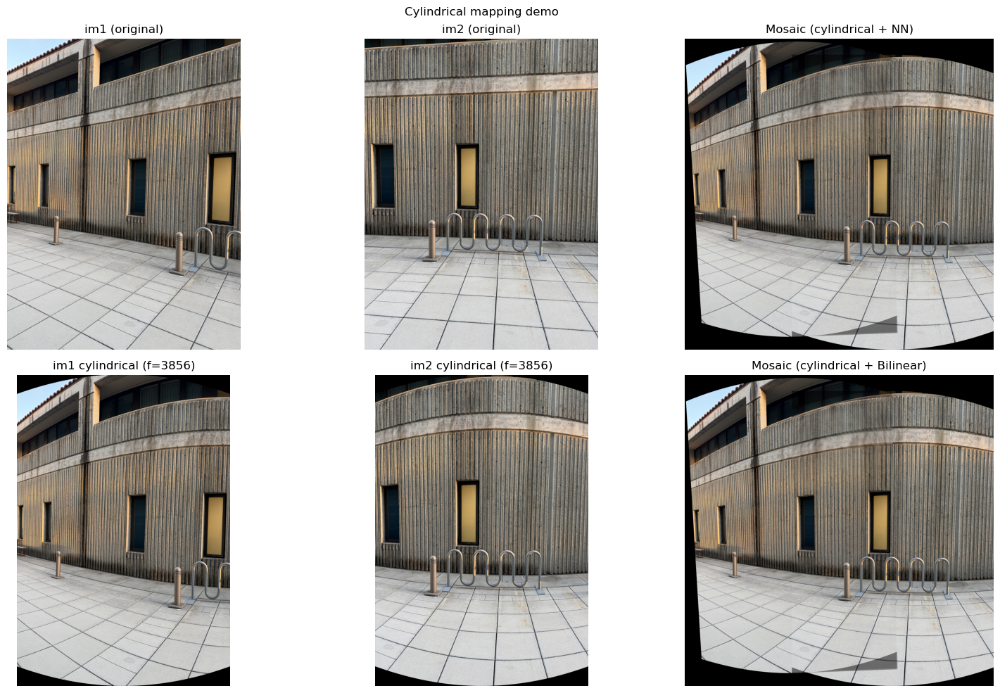